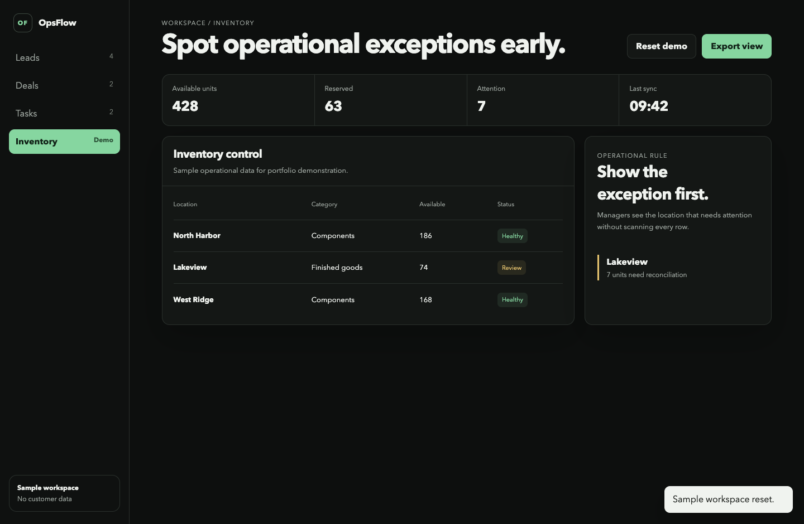
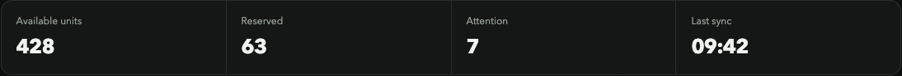
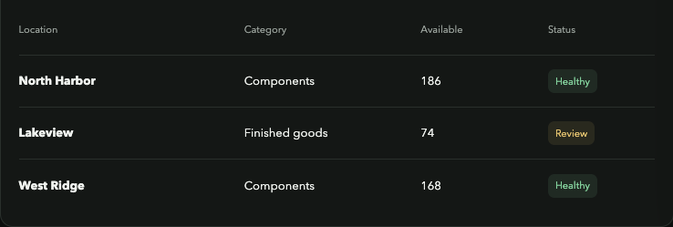
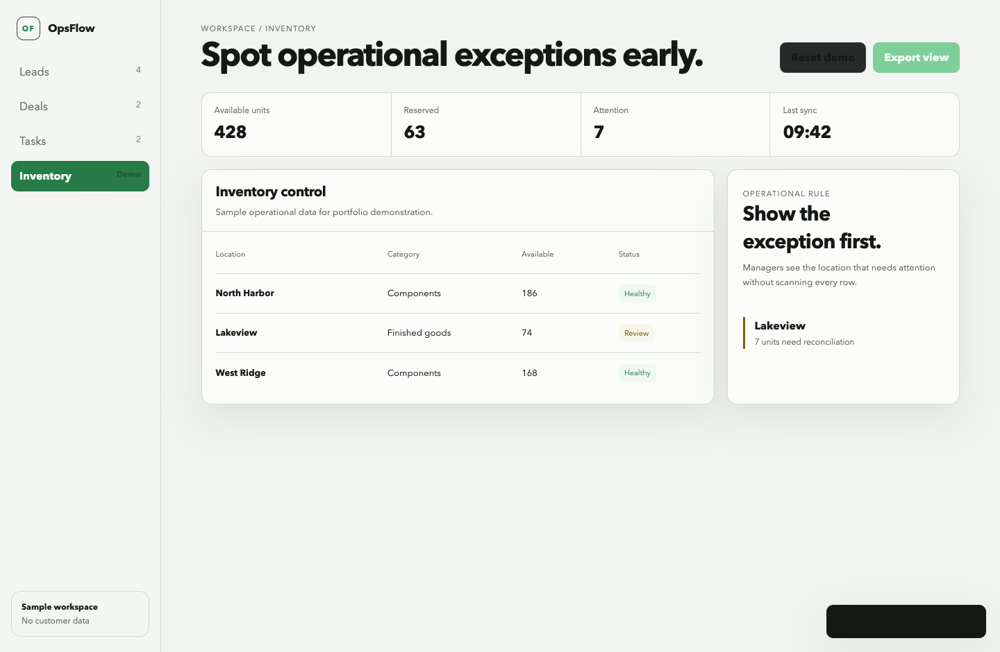
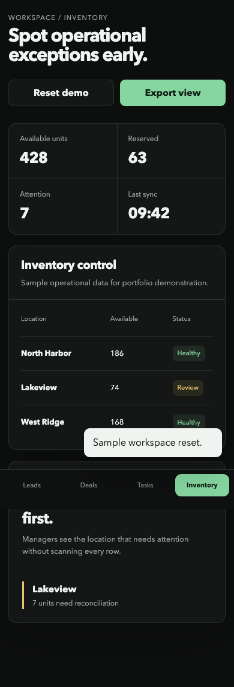
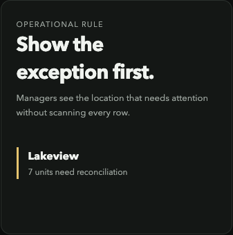

Problem
Operational data was spread across inventory, shipment, purchase, balance, and external accounting flows. Managers needed exceptions without losing source context.
An operational workspace connecting inventory, purchasing, shipments, financial controls, sessions, and external data without hiding system boundaries.
Operational data was spread across inventory, shipment, purchase, balance, and external accounting flows. Managers needed exceptions without losing source context.
Separate data sources, surface reconciliation states, preserve an audit trail, and verify changes across persistence, security, and mobile workflows.






The public screens contain sample data only. The private ERP code includes durable PostgreSQL state, session controls, backup and restore checks, mobile gates, and a constrained external accounting client. This case does not present private balances, credentials, or customer performance claims.